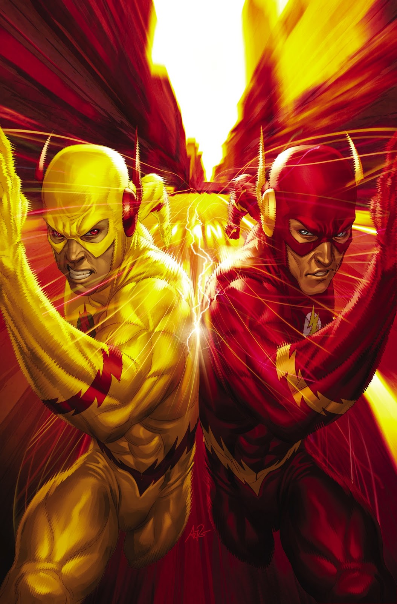

DC Comics es una editorial de cómics estadounidense. Forma parte de DC Entertainment, una de las empresas que conforman Warner Bros. Entertainment, la cual a su vez es propiedad de WarnerMedia. Fue fundada en 1934 bajo el nombre National Allied Publications, para luego tomar el nombre de DC Comics en 1937.

Esta es la historia que cambió el Universo DC para siempre. Un ser misterioso conocido como Anti-Monitor ha comenzado una cruzada a lo largo del tiempo para provocar el fin de toda existencia. A medida que las tierras alternativas se destruyen sistemáticamente, el Monitor reúne rápidamente un equipo de superhéroes de todo el tiempo y el espacio para luchar contra su contraparte y detener la destrucción. Los héroes más grandes de DC, incluidos Superman, Batman, Wonder Woman, Green Lantern y Aquaman, se reúnen para detener la amenaza, pero mientras ven morir a Flash y Supergirl en la batalla, comienzan a preguntarse si incluso todos los héroes del mundo pueden hacerlo. Detén esta fuerza destructiva.
Los muertos se levantan en miles de mundos. Los Black Lanterns, héroes y villanos reclutados desde más allá de su tumba, sólo tienen un propósito: Apagar toda la luz –y la vida– en el Universo. Hal Jordan ha superado a la muerte en otras ocasiones. Es el portador de un anillo esmeralda, el Green Lantern más grande que haya existido… Y su deber incuestionable es dirigir a los vivos en contra de este ejército abrumador de los muertos. Mientras la Noche más Oscura consume a los héroes de la Tierra, las siete corporaciones de Lanterns que reciben su poder del espectro emocional deberán terminar con la enemistad entre ellos –o serán testigos del final de toda la creación. La Tierra se ha convertido en el campo de batalla final entre los vivos y los muertos y sólo existe una verdad… Nadie escapa a la muerte.
Más allá de nuestro universo, está el Multiverso ... y debajo del Multiverso hay un reino de pesadilla donde todos los miedos que se han sentido en nuestra Tierra se vuelven realidad. Ahora, una fuerza maligna tan antigua como el tiempo quiere arrastrarnos hacia las sombras, al reino del terror sin fin. Pero cuando se abre la puerta entre los mundos, no se trata de cualquier pesadilla que se derrame. Se llaman a sí mismos los Caballeros Oscuros. Cada uno es una versión retorcida de Batman de un mundo donde uno de sus peores miedos se ha hecho realidad. Con la invasión en marcha y Batman atrapado en el Multiverso Oscuro, la Liga de la Justicia debe realizar una búsqueda imposible para encontrar los metales misteriosos capaces de repeler a los Caballeros Oscuros y a su maestro, el temible Barbatos. Si fracasan, todo lo que hayan conocido se sumergirá en la oscuridad eterna. Pero el verdadero horror es ... ¿y si ya es demasiado tarde?
Bienvenido a Sanctuary. Construido en secreto por Superman, Batman y Wonder Woman, la instalación es un hospital como ningún otro. Aquí, los superhéroes que se recuperan de su lucha contra el mal usan inteligencia artificial de vanguardia para procesar su trauma y regresar a la batalla interminable. Pero este Santuario está a punto de ser violado. El asesinato se ha infiltrado en este refugio. ¿Los principales sospechosos? Payaso Princesa Harley Quinn y viajero en el tiempo Booster Gold. Ahora el Hombre de Acero, el Caballero Oscuro y la Princesa Amazona deben buscarlos a ambos, liderando la búsqueda del culpable de este terrible crimen. Pero el peligro es más profundo de lo que creen. Y a menos que atrapen al verdadero asesino, los secretos y las vidas de todos los héroes del universo están en peligro ...
Un suceso en el cual Barry Allen por tratar de evitar la muerte de su propia madre, un crimen que por años le había costado investigar quién fue realmente el culpable de su muerte, un día como otro el mundo cambiaría de manera repentina en donde ya no es el hombre más rápido vivo, algo que antes de completar dicha revelación por parte de Hot Pursuit, el cual antes de dicha alteración temporal es obligado ante el mismo Thawne a ser perseguido en el tiempo pasado y descubrir finalmente que Thawne fue el culpable del acontecimiento de su madre fallecida, pero tras dicho incidente días después de desaparecer Eobard Thawne y regresar a su respectivo tiempo empieza a ocurrir los sucesos de Flashpoint un evento en el cual Barry Allen al principio había pensado que había despertado al día siguiente en el mundo de manera común y corriente, pero que la diferencia era que ya no era el hombre más rápido vivo.
al darse cuenta de que este mundo alterado era el resultado (al inicio aparente hecho por el mismo Flash Reverso) cuando se da cuenta de que algunas cosas son familiares y otros no, cosa que lo lleva a la casa de la Mansión Wayne cuando descubre que el Batman de esta dimensión no es nada menos que Thomas Wayne, y el Joker es nada menos que la madre de Bruce, (que en esta realidad Bruce Wayne fue el que falleció en el asesinato por parte del ladrón y no sus padres) Martha Wayne, aunque al final, logran detenerle. Este mundo está inmerso en una guerra entre altantes y amazonas, media Europa hundida bajo el mar, Cyborg es que sustituye a Superman en esta realidad como el campeón de América, algunos héroes no llegaron a serlo, otros villanos como Capitán Cold son supuestos héroes cuando este revela un pasado criminal tormentoso, pero cuando Barry, Thomas Wayne y otros héroes de esta realidad están decididos a frenar el conflicto atlante-amazonas, aparte de ayudar a un grupo de rebeldes que han estado ocultos en las ruinas de la ciudad de Londres, batallan contra ambos bandos con el fin de evitar el fin de la humanidad.

Al final, aparece una vez más Eobard Thawne, que aunque acepta la nueva realidad alterada,
sigue sin poderse dar cuenta él mismo de que dicha realidad aún de es modo debe ser modificada aún más,
y después de haber repetido el experimento que le dio sus superpoderes a Barry, decide emprender su lucha
contra Thawne no sin antes de que Thomas Wayne le clave una espada para matarle, y antes de morir, le
revela que Barry realmente fue quien daño la realidad que ha visto, al final, Barry decide correr más
rápido que nunca. En ese momento, antes de sobrepasar la velocidad de la luz, recibe energía de todos
los velocistas caídos, así como el de su propio nieto que había sido mandado al siglo XXV por la
alteración del tiempo.
Al final una misteriosa mujer le dice, que para arreglar la línea temporal,
debe dejar que suceda el acontecimiento causado por Thawne así como escoger sabiamente cual línea
temporal es la que debe marcar correctamente para su restauración, creando asi el arco de Los Nuevos 52.
¡El mundo de Watchmen choca con el Universo DC en la historia más impactante de la historia de DC! Wally West está atrapado fuera del tiempo y el espacio, perdido en los recovecos del sangrado dimensional debido al Flashpoint causado por su mentor, Barry Allen. A la deriva en esta nada, solo Wally, el hombre una vez conocido como Kid Flash y luego Flash, puede ver el misterio que impregna el universo. ¿Quién ha robado 10 años? Wally ahora debe regresar a la Tierra y a los seres queridos que siempre han actuado como su pararrayos, pero no importa con quién contacte, se aleja cada vez más, más cerca de la nada. El destino del universo depende del RENACIMIENTO de Wally West ...
Durante los inolvidables eventos de DC Universe Rebirth, Batman encontró un misterio que ni siquiera puede comenzar a resolver: un extraño botón de cara sonriente manchado de sangre incrustado en la pared de Batcave. Todo el análisis sugiere que el botón no es de este universo ... entonces, ¿de dónde vino? ¿Y quién lo dejó aquí? Estas son preguntas que solo Flash puede ayudar a responder. Cuando el botón es robado por Reverse-Flash, Batman y Flash siguen su rastro a un mundo paralelo, una línea de tiempo alternativa retorcida que no debería existir. Alguien está enviando a los héroes a un viaje extraño a través de la realidad, mostrándoles destellos de seres queridos caídos y amigos olvidados, pero ¿quién? Wally West advirtió al Flash de una fuerza invisible que influye en nuestro mundo: distorsiona las historias, mueve los hilos, observa todo, y el extraño botón amarillo podría ser la clave para encontrarlo.
Siete años después de los
eventos de Watchmen, Adrian Veidt ha sido expuesto como el asesino de millones. Ahora fugitivo,
ha ideado un nuevo plan para redimirse a los ojos del mundo. ¿El primer paso? Buscando al Dr.
Manhattan. Junto a un nuevo Rorschach y el Mime y Marionette nunca antes visto, sigue el rastro
de Manhattan hacia el Universo DC, que está al borde del colapso a medida que las tensiones
internacionales empujan el reloj del fin del mundo cada vez más cerca de la medianoche.
¿Es esto todo lo que está haciendo el Dr. Manhattan?.
El destino final del Universo DC se decide en un enfrentamiento entre Superman y el Dr. Manhattan.
¿Dónde o qué es la Justice Society of America? ¿Quién es Wally West? A medida que las respuestas a
los misterios que plagan a nuestros héroes se revelan, una cosa es cierta. Su mundo nunca volverá
a ser el mismo. Con la Tierra al borde de una superguerra internacional, Black Adam y sus seguidores
hacen su movimiento mientras nuestros héroes están ocupados en otra parte. El Dr. Manhattan
ha puesto en marcha su juego final. El Reloj del Juicio Final continúa avanzando hacia la
medianoche con el destino de todo el multiverso en juego.
¿Quiénes son los tres Jokers?
Batman no entiende cómo ni por qué,
pero el hecho es seguro: el hombre
al que ha estado persiguiendo durante toda su vida no
es un hombre en absoluto. Hay tres comodines. Ahora que conoce la
increíble verdad, Bruce necesita respuestas reales. Junto a
Barbara Gordon y Jason Todd, dos ex víctimas de la brutalidad del Joker,
el Caballero de la Noche finalmente está en el camino de derrotar
al loco de una vez por todas.
Hasta el último de él.
A lo largo de sus ocho décadas de existencia, DC Comics nos ha presentado a todo tipo de personajes, desde el alienígena que llegó a la tierra para convertirse en su salvador, hasta el millonario que sacrifica una vida estable por impartir justicia en una ciudad al borde del colapso. Sin embargo, el paso del tiempo ha ayudado a algunos personajes a desarrollar su rudeza, a tal grado que sus rivales no tienen opción ante ellos.

En nombre de sus padres asesinados, Bruce Wayne libra la guerra eterna contra los criminales de Gotham City. Él es la venganza. El es la noche. El es Batman.
Batman, uno de los personajes de ficción más icónicos del mundo, ha dedicado su vida a una cruzada sin fin, una guerra contra todos los criminales en nombre de sus padres asesinados, que le fueron arrebatados cuando era solo un niño. Desde esa trágica noche, ha entrenado su cuerpo y su mente casi a la perfección física para convertirse en un superhéroe hecho a sí mismo. Ha desarrollado un arsenal de tecnología que avergonzaría a la mayoría de los ejércitos. Y ha reunido equipos de sus compañeros Superhéroes de DC, como la Liga de la Justicia, los Outsiders y Batman, Incorporated.
Un multimillonario playboy de día, la doble vida de Bruce Wayne le brinda la comodidad de una vida sin preocupaciones financieras, un leal mayordomo convertido en tutor y la base de operaciones perfecta en la antigua red de cuevas debajo de la extensa propiedad de su familia. Por la noche, sin embargo, se deshace de toda pretensión, se pone su icónica capa festoneada y su capucha puntiaguda y se adentra en las calles, los cielos y los tejados de Gotham City.
Barry Allen es un científico de la policía con una reputación de ser muy lento y frecuentemente retrasado, lo que frustra a su prometida, Iris West. Cuando Barry era un niño, su madre fue asesinada y el padre de Barry fue culpado injustamente. En realidad, fue el Flash Reverso. Una noche, mientras trabaja hasta tarde en un nuevo caso, un rayo cae y hace añicos una caja llena de sustancias químicas no especificadas y empapa a Barry, dejándolo inconsciente temporalmente. Como resultado, Allen descubre más tarde que puede correr a velocidades sobrehumanas y posee reflejos, sentidos y curación igualmente mejorados. Más tarde se pone un traje rojo, luciendo un rayo en el pecho, se hace llamar Flash (en honor al superhéroe que él admiraba en su infancia, Jay Garrick), y se convierte en el protector y luchador contra el crimen disfrazado residente de Central City.

El piloto de pruebas Hal Jordan pasó de ser una novedad, el primer Green Lantern humano de la historia,
a uno de los Linternas más legendarios en empuñar un anillo de poder.
La vida de Hal Jordan cambió dos veces al estrellarse un avión. La primera vez fue cuando presenció la muerte de su padre, el piloto Martin Jordan. El segundo fue cuando, como piloto adulto y entrenado, fue convocado a los restos estrellados de una nave espacial perteneciente a un extraterrestre llamado Abin Sur. Abin explicó que era miembro del Green Lantern Corps, una organización de seres de todo el cosmos, armados con anillos de poder alimentados por la energía verde de toda la fuerza de voluntad del universo.
A su muerte, Abin confió su anillo y deberes como Linterna Verde del sector espacial de la Tierra a Hal Jordan.
Más rápido que una bala veloz, más poderoso que una locomotora ... El Hombre de Acero libra una batalla interminable por la verdad, la justicia y el estilo estadounidense.
Desde su uniforme azul hasta su capa roja fluida y el escudo "S" en su pecho, Superman es uno de los superhéroes de DC más inmediatamente reconocibles y queridos de todos los tiempos. El Hombre de Acero es el símbolo máximo de verdad, justicia y esperanza. Es el primer superhéroe del mundo y una luz guía para todos.
La punta de la lanza en una revolución que cambiaría el panorama de la cultura pop, Superman ha pasado los últimos ochenta años redefiniendo lo que significa defender la verdad, la justicia y el estilo estadounidense. Superman, el último superviviente del condenado planeta Krypton, criado en el tranquilo corazón de Smallville, Kansas, es tanto una leyenda como un hombre: el estándar de oro del heroísmo, la compasión y la responsabilidad.
Aunque sus poderes lo hacen parecido a un dios al lado de sus compatriotas humanos, la historia de Superman no es de codicia o conquista. En cambio, se esfuerza por representar la bondad inherente del espíritu humano y la capacidad de cada ser vivo de hacer lo correcto por sus vecinos.

Hijo de un farero y una reina atlante, Arthur Curry es el puente entre el mundo de la superficie y su tumultuoso reino del mar.
Monarca del reino submarino de Atlantis y Rey de los Siete Mares, Aquaman es uno de los superhéroes de DC más poderosos, al mando de un reino que cubre las tres cuartas partes de la superficie de la Tierra, incluidas todas las criaturas que contiene. Arthur Curry vino de orígenes humildes, ya que la mayor parte de su vida la pasó exiliado de su hogar, sin darse cuenta de sus nobles orígenes. Cuando finalmente tomó el trono como adulto, se convirtió en el rey más legendario en la historia de la Atlántida.
Miembro fundador de la Liga de la Justicia de América, Aquaman ha luchado junto a Superman, Batman y Wonder Woman y se ha mantenido firme contra las mayores amenazas que el universo haya visto.
Bella como Afrodita, sabia como Atenea, más rápida que Hermes y más fuerte que Hércules, la princesa Diana de Themyscira lucha por la paz en el mundo del hombre.
Wonder Woman, una de las superhéroes de DC más queridas e icónicas de todos los tiempos, se ha mantenido durante casi ochenta años como símbolo de la verdad, la justicia y la igualdad para las personas de todo el mundo. Criada en la isla escondida de Themyscira, también conocida como Paradise Island, Diana es una amazona, como las figuras de la leyenda griega, y el regalo de su pueblo a la humanidad.
Como emisaria de Themyscira para Man's World, Diana ha asumido el deber de predicar con el ejemplo, incluso si las diferencias entre su lugar de nacimiento y su nuevo hogar a veces presentan obstáculos para que ella salte.
Ella ha llegado a representar la posibilidad y el potencial de una vida sin guerra, odio o violencia, y es un faro de esperanza para todos los que se encuentran en necesidad. Se destaca como un igual entre los superhéroes más poderosos, con un sentido de propósito para proteger al mundo de la injusticia en todas sus formas.


Wallace West, el último de una larga lista de velocistas, no se toma el manto de Kid Flash a la ligera, incluso cuando le hace cuestionar todo sobre sí mismo.
Entre todos los viajes en el tiempo, los saltos de universo y las resurrecciones, la familia Flash es todo menos simple. Pregúntele a Wallace West, la última incorporación a la extraña y maravillosa refriega. Compartir un nombre con el Kid Flash original, Wally West, en realidad podría ser lo menos complicado de su vida.
Golpeado por un rayo Speed Force gracias a algunos problemas realmente alucinantes con la línea de tiempo, Wallace recibió sus poderes y fue puesto en el radar de Barry Allen, quien lo tomó bajo su protección, o, al menos, lo intentó. Si hay algo que Wallace aprendió muy rápidamente, es que ser un velocista no es algo que se te pueda enseñar de la noche a la mañana, incluso por el hombre más rápido del mundo.
Wally West, el personaje era un niño pelirrojo de ojos verdes, quien era el sobrino de la novia de Barry Allen, Iris West. Durante una visita a la central de laboratorio de la policía, el accidente que le dio sus poderes a Barry, se repitió pero está vez dándoselos a Wally West. Ahora el poseía las mismas habilidades que Barry y pasó a ser su compañero, llamado Kid Flash. Su traje fue modificado a uno amarillo con partes rojas. Además de sus apariciones en los títulos de Flash, formó parte de los Teen Titans, y se volvió un gran amigo de Dick Grayson, el Robin de esos tiempos y que poco después comenzaría a ser llamado Nightwing, también era amigo de Aqualad, posteriormente dejó a los Teen Titans para ser Flash por la muerte de su antiguo compañero. Convirtiéndose el nuevo flash y usando el traje tradicional color rojo, en la actualidad es el flash de los Titans y ocupa un traje rojo con rayos blancos.
Si es difícil ser un superhéroe, ¿cómo es ser un compañero? Los héroes obtienen la gloria, mientras tú limpias el desorden. No tomas las decisiones y no das órdenes. Entonces, ¿qué haces si eres el niño maravilla de uno de los superhéroes más reconocibles del universo y estás buscando escapar por tu cuenta?
Sencillo. Te conviertes en Nightwing.
Cuando su familia de acróbatas de circo fue brutalmente asesinada, Dick Grayson fue acogido por el superhéroe multimillonario y amigo de los murciélagos Bruce Wayne. Bruce compartió su vida secreta como Batman con el niño y finalmente lo convirtió en Robin, el socio del Caballero Oscuro en Gotham. Pero a medida que Dick crecía, jugar el papel secundario del héroe más severo de la Liga de la Justicia comenzó a desgastarlo y, finalmente, se puso en marcha por su cuenta, manteniéndose fiel a lo que aprendió como Robin mientras se convertía en un miembro respetado de el panteón de superhéroes. Su código, como el de su mentor, es simple: si está infringiendo la ley en su territorio, tenga cuidado. Cualquiera que no lo haga puede esperar un viaje corto y seguramente doloroso a Arkham.
Uno es uno de los superhéroes más grandes del mundo, una leyenda cuyo símbolo inspira esperanza y que se erige como la encarnación de la verdad y la justicia. El otro es uno de los mayores villanos del mundo, un genio ególatra cuyas acciones solo sirven para promover sus propios objetivos, incluso a expensas de los demás. ¿De qué lado de la moneda se cae? ¿Bueno o malo? ¿Extraterrestre o humano? ¿Superman o Lex Luthor?
¿Quizás sea un poco de ambos?
Clonado a partir del ADN kryptoniano y humano, y dotado de una poderosa telequinesis táctil, Superboy posee habilidades similares a las del Hombre de Acero. Más rápido que una bala veloz, más poderoso que una locomotora, capaz de saltar edificios altos de un solo salto, Kon-El siempre se esfuerza por estar a la altura del nombre de Superman, pero cuestiona constantemente su capacidad para hacerlo. Por supuesto, tener el ADN compartido de Lex Luthor no lo hace más fácil para el joven héroe, que vive con el temor constante de qué tipo de influencia podría esconder su lado humano.
Después de haber pasado su gestación en un laboratorio, Damián como un pre-adolescente es abandonado por su madre para ser cuidado por su padre, que no era consciente de la existencia de su hijo hasta ese momento. Damián es violento y engreído, y fue entrenado por la Liga de Asesinos, aprendiendo a matar a una edad temprana, lo que crea una relación conflictiva con su padre que se niega a matar a sus oponentes. Sin embargo, el Caballero Oscuro se preocupa por su progenie perdido. Después de los sucesos de Batman RIP y Batman: Battle for the Cowl , Damián toma la identidad de Robin a los diez años de edad, convirtiéndose en la quinta persona que utilizar la identidad de Robin. La primera vez que trabajó con Dick Grayson - el Robin original - que temporalmente se hizo cargo como Batman, antes de ir a trabajar al lado de su padre, al regreso de Bruce Wayne en el papel de Batman.
El ex Robin Jason Todd se separó de Batman por sus enfoques enormemente diferentes de la lucha contra el crimen, y finalmente fundó su propio equipo, los Outlaws.
La muerte puede ser algo extraño para DC Super Heroes, especialmente cuando no se adhiere del todo. Pregúntale a Jason Todd. Como el segundo Robin de Batman, Jason murió a manos del Joker cuando era solo un niño. Pero volvió a la vida con la ayuda de un Lazarus Pit y la deformación literal del tiempo y la realidad.
Desafortunadamente, la resurrección de Jason estuvo lejos de ser agradable. Traumatizado por su propio final violento, Jason regresó al mundo desquiciado y empeñado en vengarse. No solo para él, sino para todos los que se encuentran atrapados en el fuego cruzado del ciclo interminable de captura y liberación del inframundo de supervillanos de Gotham City. Se entrenó a sí mismo para ser un asesino y un mercenario, y adoptó una nueva identidad y un nombre en clave, RedHood, para infundir su propia marca de miedo en los criminales de Gotham.
Barbara Gordon redefinió lo que significaba ser una heroína hecha a sí misma cuando elaboró su propio disfraz y se unió a la cruzada de Batman justo debajo de las narices de su padre.
Las calles de Ciudad Gótica tienen una serie de ángeles de la guarda que las vigilan. Y una de las primeras, la joven que convirtió al dúo dinámico en la familia Batman, fue Batgirl. Barbara Gordon siempre ha existido entre dos mundos: su vida en casa como la única hija del comisionado de policía James Gordon y su vida de gárgolas como socia del Caballero de la Noche y miembro fundador de Birds of Prey.
Capaz de tomar la forma de casi cualquier animal, Garfield Logan, a pesar de su personalidad frívola, es uno de los superhéroes más estimados que lleva el nombre de "Titán".
No es fácil ser ecológico, pero Garfield “Gar” Logan ciertamente hace lo mejor. Después de contraer una enfermedad rara cuando era niño, los padres de Gar se vieron obligados a administrar un tratamiento genético experimental que incluía el ADN de animales con resistencias conocidas a la enfermedad como posible cura.
La buena noticia: su experimento funcionó. La mala noticia: tuvo algunos efectos secundarios bastante dramáticos. Convirtió la piel, el cabello y los ojos de Gar en un color verde brillante y le dio la increíble habilidad de cambiar de forma a cualquier animal a voluntad ... con solo una advertencia importante. Cualquier forma que tome Gar también será completamente verde, pase lo que pase. Demasiado para poder mezclarse.
El multimillonario Oliver Queen usa tanto su riqueza como sus incomparables habilidades de tiro con arco como el arquero de batalla de la Liga de la Justicia, Green Arrow.
Oliver Queen dio todo por sentado hasta que la tragedia golpeó en el mar, dejándolo solo en una isla desierta. Allí, Queen tuvo que cavar profundo para descubrir si tenía la fortaleza interior para sobrevivir. Mientras estaba varado en esta isla, Oliver perfeccionó sus ya formidables habilidades de tiro con arco para convertirse en el mejor arquero jamás conocido.
Cuando finalmente regresó a la civilización, se embarcó en una carrera como vigilante urbano, intentando librar las calles de su ciudad natal de Seattle, y también de Star City, del crimen y la corrupción con nada más que un arco y flechas. Visto como un playboy mimado por el mundo exterior, Green Arrow se preocupa más por la difícil situación de los pobres y el sufrimiento en Estados Unidos, quizás más que cualquier otro superhéroe disfrazado, un “guerrero de la justicia social” en el verdadero sentido de la palabra.
Con un nombre como Zatanna Zatara, convertirse en mago de teatro profesional casi parece una elección de carrera incuestionable. Por supuesto, no está de más que las ilusiones que crea y los hechizos que teje para deslumbrar a la audiencia sean reales.
Inteligente, confiada, segura de sí misma y capaz de manipular la realidad misma con sus vastas habilidades mágicas, Zatanna equilibra su tiempo como ilusionista escénica con la lucha contra las artes oscuras junto a algunos de los superhéroes más grandes del mundo. Al recitar hechizos al revés, puede invocar cualquier cosa que desee su imaginación, y su inventiva a menudo le permite encontrar soluciones creativas incluso para los problemas más difíciles.
Sin embargo, Zatanna no es ajena a los peligros de la magia, ya que perdió a su padre por las artes oscuras. Aunque esto la dejó sin un mentor y relativamente inexperta en el mundo de la magia, solo fomentó su determinación de enfrentarse a cualquiera que busque usar la magia a costa de otros. Pero si Zatanna espera escapar del destino de su padre, tendrá que dominar rápidamente su oficio antes de enfrentarse a los místicos más poderosos del mundo.
Cuando Billy Batson pronuncia el nombre de un mago anciano, se transforma en el mortal más poderoso del mundo: ¡Shazam!
Los padres de Billy Batson murieron cuando aún era un bebé. El niño huérfano creía que no tenía a nadie en quien confiar y tenía que valerse por sí mismo. Pero un día, fue guiado a la Roca de la Eternidad, donde esperaba el antiguo mago Shazam. El mundo necesitaba héroes y el niño se convirtió en el nuevo campeón del mago, capaz de transformarse en un superhéroe adulto invocando un relámpago mágico. Ahora, siempre que se deba detener el mal o las personas necesiten ayuda, ¡la Tierra puede confiar en el poder de Shazam!
El Universo DC lleva existiendo desde hace muchísimos años y nos ha dado una lista innumerable de héroes y villanos. Aquí no encontraréis a algunos de lose enemigos más famosos de los cómics, como es el caso de Joker o Lex Luthor.
Artista homicida y agente del caos, el Payaso Príncipe del
Crimen es la encarnación de todo lo que Batman lucha contra ...
y todo lo que teme.
Ningún nombre infunde terror
en los corazones de los ciudadanos
de Gotham como el Joker. En una
ciudad invadida por criminales
descomunales, el villano que siempre ríe está solo. Un psicópata
completo sin brújula moral alguna, el Joker, cuyo nombre real e identidad siguen siendo
completamente desconocidos, se caracteriza por su piel blanca como la tiza, cabello verde y una sonrisa permanent
e de rictus que se extiende por su rostro. Pero no hay nada divertido en este payaso en particular, que solo encuentra humor
en el sufrimiento de los demás.
Ciertamente, ningún villano ha logrado infligir tanto dolor y sufrimiento a Batman como el Joker, quien en más de una ocasión ha llevado la muerte a la familia extendida de Bruce Wayne. Mientras haya un Batman trayendo justicia a Gotham City, habrá un Joker para traer pesadillas.
Eobard Thawne encontró una cápsula del tiempo en el siglo 25 que contenía un disfraz de Flash (Barry Allen) y con un dispositivo Tachyon amplificó la energía de velocidad del traje, dándose a sí mismo habilidades de velocista. Invirtiendo los colores del traje, adoptó el apodo de "Profesor Zoom, Flash Reverso" y se embarcó en una ola de crímenes.3Sin embargo, la cápsula del tiempo también contenía un reloj atómico, y para evitar una explosión nuclear, Flash persiguió y derrotó a Zoom, esperando saber dónde estaba el reloj. Desafortunadamente no lo hizo, pero Flash luego encontró el reloj, lo detonó de manera segura y destruyó el disfraz de Thawne. Thawne culpó a Flash por su derrota y se obsesionó con "reemplazar" a Barry y viajó en el tiempo para vengarse.
"En el día más oscuro, en la noche más brillante, ten cuidado con tus miedos convertidos en luz. ¡Deja que aquellos que intentan detener lo que es correcto, ardan como mi poder, el poder de Sinestro!" Desde el mayor Green Lantern hasta el mayor enemigo del Cuerpo, la caída en desgracia de Thaal Sinestro se puede atribuir fácilmente a su propia arrogancia, pero si le preguntas, el verdadero problema radica en el propio Green Lantern Corps y sus creadores, los Guardianes de la Tierra. Universo. Después de todo, en lo que respecta a Sinestro, todo lo que hace es por el bien del universo. Originario del planeta Korugar, Sinestro sirvió una vez como Linterna Verde del Sector 1417 y rápidamente ganó reconocimiento entre el Cuerpo por su capacidad para vigilar su sector. Sin embargo, la paz tuvo un precio. La determinación de Sinestro de preservar el orden hizo que actuara más como un dictador que como un protector, conquistando su propio planeta natal en el proceso.
Un genio ególatra y un industrial
multimillonario, Lex Luthor libra una interminable batalla personal, pública y política contra Superman.
Es el hombre más inteligente de la Tierra. Pero
Lex Luthor solo ha usado su mente brillante para
ganancias egoístas y para promover su propia amarga
venganza contra aquellos que siente que lo han hecho mal.
Un sociópata notorio y xenófobo en casi todas sus encarnaciones,
ya sea científico, hombre de negocios o incluso el presidente de los
Estados Unidos, Luthor siempre usa su poder e influencia no para ayudar a la humanidad, sino para intentar
destruir al único hombre del planeta. que lo hace sentir insignificante: Superman.
El mayor enemigo de Aquaman es el azote de los siete mares, David Hyde, cuyo corazón es tan frío como las profundidades del océano que caza.
Considerado uno de los mayores enemigos de Aquaman, Black Manta tiene un odio singular por el Rey de la Atlántida. Durante décadas, el verdadero nombre y los motivos de Manta estuvieron envueltos en misterio, escondidos detrás de su amenazador casco de gran tamaño. En los tiempos modernos, sin embargo, se han revelado sus verdaderas motivaciones.
Pero no importa la época, Black Manta siempre ha infligido un tipo especial de dolor a su archienemigo, cimentando su reputación como uno de los criminales más despiadados y motivados en la historia de DC.
Alternativamente enemiga y aliada de Wonder Woman, Cheetah busca para siempre un equilibrio entre su naturaleza humana y animal.
La arqueóloga Barbara Ann Minerva siempre tuvo la reputación de hacer todo lo posible para recuperar los artefactos que buscaba, sin importar el riesgo. Su actitud, como era de esperar, resultó en una tragedia. Después de obsesionarse cada vez más con la mitología y la divinidad, Barbara Ann llevó a su equipo a las profundidades de África, solo para ser atrapada y obligada a participar en un antiguo ritual arcano que la maldijo y la transformó en un híbrido humano-guepardo con ansias de vivir. sangre.
Una vez amiga de Wonder Woman, Barbara Ann culpó de su transformación a la incapacidad de Diana para salvarla, y le guardaba rencor al superhéroe que la llevó al punto de la locura.


Líder de los pícaros y uno de los enemigos más antiguos de Flash, Leonard Snart puede ser un criminal, pero no carece de honor.
En los anales de la villanía, hay pocos tipos malos tan agradables como el Capitán Frío. Viéndose a sí mismo como un supervillano obrero y trabajador, Cold tiene un código de honor, uno que le impide matar a personas inocentes ... aunque está más que feliz de robarles a ciegas.
Armado con una sofisticada pistola fría, Leonard Snart ha estado lidiando con Flash desde sus primeros días. El líder autoproclamado de los Rogues, una banda suelta de criminales unidos en su odio hacia el Velocista Escarlata, el Capitán
Cold ha enfrentado constantemente su "cero absoluto" contra la supervelocidad de Flash.
Tan mortal como hermosa, la infame ladrona de gatos Selina Kyle usa sus nueve vidas para caminar por el filo de la navaja entre la luz y la oscuridad en Gotham City.
El murciélago puede ser el rey de las bestias de Gotham. ¿Pero el gato? El gato es definitivamente la reina. La infame
ladrona Selina Kyle es sin duda uno de los personajes más icónicos del Universo DC , no porque sea una superhéroe en sí,
sino porque es muy buena para dejarlos perplejos. Motivada en parte por su propio interés, en parte por la diversión de todo,
Catwoman ha estado desconcertando a los héroes de Gotham City,
tanto enmascarados como desenmascarados, desde el principio.Una consumada ladrona de joyas y una heroína ocasional, la turbia brújula moral de Selina ha complicado su relación con Batman, por decir lo menos. Aún así, el innegable magnetismo entre Bat y Cat es una de las constantes más confiables de Gotham: donde sea que vaya Catwoman, seguramente Batman la seguirá.
Un arma fabricada en las condiciones más extremas imaginables, Doomsday es una fuerza definitiva e imparable de destrucción y devastación.
Hace mucho tiempo, los científicos del planeta Krypton diseñaron una criatura para que fuera el arma definitiva. Esta criatura, el Último, no tenía otro propósito que la destrucción, y se abrió camino a través de otros planetas antes de ser finalmente derrotado. Enterrado en el primitivo planeta Tierra, se despertó después de muchos siglos y desató la muerte, ganándose el nombre de Doomsday. El monstruo finalmente fue detenido por Superman, quien aparentemente perdió su propia vida en el proceso. Impulsado por un instinto de cazar a los habitantes de su propio mundo natal, Doomsday ha resurgido una y otra vez para amenazar a Superman y su planeta adoptivo, sin importar lo que se interponga en su camino.
El multiverso sería un lugar mucho menos animado sin las travesuras y travesuras de la ex Dra. Harleen Quinzel, la única Princesa Payaso del Crimen.
A veces, el amor puede hacer que la gente haga locuras. ¿Otros tiempos? Los vuelve completamente locos. Tal es el caso de Harley Quinn, anteriormente Dra. Harleen Quinzel. Un psicólogo prometedor y pasante en Arkham Asylum en Gotham City, Harleen tuvo la oportunidad de conocer de cerca al Joker, una experiencia que terminó ... mal. Harleen se obsesionó con su tema y, después de enamorarse locamente del Príncipe Payaso del Crimen, lo ayudó a escapar del manicomio.
Su amor por el Joker inspiró a Harleen a adoptar una nueva identidad, la de Harley Quinn, el interés amoroso del Joker, tanto si quería una como si no.
Con el tiempo, Harley se dio cuenta de que el Joker la estaba reteniendo y se lanzó por su cuenta. Se convirtió en emprendedora y miembro de varios superequipos de poca reputación (incluido el Escuadrón Suicida), la pandilla de chicas de Gotham City (Gotham City Sirens) y un espectáculo secundario itinerante. En el camino, Harley se ha convertido en una de las supervillanas más populares del Universo DC, gracias en parte a su versatilidad, carisma y perspectiva alegre pero trastornada de la vida.
Trigon, la encarnación viviente del mal mismo, ha intentado numerosas veces conquistar la realidad, pero ha sido frustrado por su hija Raven y los Jóvenes Titanes.
Nacido de la unión impía entre el mal expulsado de las almas humanas y la energía mística del reino de Azarath, Trigon es la manifestación física de la oscuridad que acecha en las peores partes de la humanidad. Un tirano y un monstruo, Trigon gobierna cientos de mundos desde su hogar en Azarath, pero siempre está buscando más para conquistar.
A lo largo de los años, el señor de los demonios ha engendrado una serie de niños para usarlos como armas en su sed infinita de dominación. Afortunadamente, al menos uno de esos descendientes, el superhéroe de DC Raven, tiene otras ideas sobre su destino.
Para algunos, la venganza es un plato que se sirve mejor frío. Pero para el Red Lantern Atrocitus, se sirve mejor con fuego, sangre y una cantidad de rabia sin precedentes.
Hace millones de años, los Guardianes del Universo crearon a los Manhunters robóticos como su fuerza intergaláctica de mantenimiento de la paz. Pero después de un error de programación, los Manhunters arrasaron el Sector Espacial 666, erradicando casi toda la vida, incluidas las de la esposa y los hijos de Atrocitus, que murieron brutalmente ante sus ojos. Uno de los pocos supervivientes de la masacre, Atrocitus juró venganza contra los Guardianes. Pero a pesar de su considerable fuerza, habilidad y esfuerzos, los Guardianes lo capturaron y encarcelaron mientras ocultaban su horrendo error al universo.
Encerrado durante años, lo único que lo mantuvo vivo fue su odio, hasta que finalmente lo consumió. Atrocitus aprovechó la energía roja de la ira y, a través de rituales de sangre, forjó una Batería de Poder, creando el Cuerpo de Linternas Rojas.
Slade Wilson es un mercenario y asesino a sueldo que no tiene reparos en cruzar líneas para hacer el trabajo, sin importar dónde se tracen esas líneas. Un operativo formidable para el ejército de los Estados Unidos, el coronel Slade Wilson aceptó someterse a un proceso experimental que aumentó sus habilidades mentales y físicas a niveles sobrehumanos. En lugar de continuar su carrera como soldado, Slade se convirtió en el mercenario enmascarado Deathstroke. Esta decisión resultó en que su esposa lo dejara a él y que su hijo Joseph quedara herido permanentemente, así como en la muerte de su hijo Grant, quien intentó emular a Slade.
Un ex villano de Batman y miembro fundador de Suicide Squad, Floyd Lawton es el asesino definitivo a sueldo.
Uno de los asesinos más letales del Universo DC, Floyd Lawton, también conocido como Deadshot, no tiene habilidades sobrehumanas reales, a menos que cuentes su puntería asombrosamente precisa y su afecto por las armas de fuego de todo tipo. Al jactarse de que nunca falla un tiro, Lawton se hizo famoso por ser un tirador mortal y un pistolero a sueldo, una reputación que le valió muchos problemas tanto con la ley como con la comunidad de superhéroes.
Aunque es violento, peligrosamente desequilibrado y asesino, Lawton, con el tiempo, ha demostrado su capacidad para hacer el bien. Es ferozmente leal a su hija semi-separada, Zoe, a quien trata de apoyar con las ganancias de sus misiones y esfuerzos criminales.
Batman Who Laughs era Bruce Wayne de la Tierra 22 del Multiverso Oscuro . Era un lugarteniente de Barbatos y el líder de los Caballeros Oscuros durante la primera invasión del Multiverso Oscuro. y, más tarde, los héroes infectados de los Seis Secretos . Convenció a Perpetua , el creador original del multiverso, de que lo eligiera como su lugarteniente sobre Lex Luthor, ya que su visión estaba limitada por su ego. Batman Who Laughs continuó con sus propios planes, eventualmente adquiriendo poder cósmico y convirtiéndose en una amenaza mayor que la propia Perpetua.
Black Adam, uno de los principales portadores de magia del mundo, ha sido héroe y villano a lo largo de una vida que ha durado miles de años.
Miles de años antes de que Billy Batson se convirtiera en un héroe con poderes mágicos, el mago Shazam seleccionó a otro campeón. Teth-Adam o "Poderoso Adán" comenzó como un héroe de la humanidad, pero luego permitió que su poder corrompiera sus ideales y deseos. Ahora etiquetado como Black Adam, fue exiliado por Shazam, pero regresó en la actualidad. Un enemigo frecuente de los héroes de la Tierra, Black Adam cree que es la persona adecuada para liderar a la humanidad y cualquier acción que emprenda es necesaria para un bien mayor.
Armado con la Ecuación Anti-Vida, el Señor Oscuro de Apokolips y padre de Orión busca controlar toda la vida sensible en todo el universo… y más allá.
En el conocido DC Multiverse, un nombre se destaca sobre todos los demás cuando se trata de la villanía suprema: Darkseid. Gobernando sobre el mundo infernal de Apokolips, Darkseid no solo quiere conquistar un planeta o subyugar a sus enemigos, busca robarle a todo el universo su libre albedrío y reemplazarlo por el suyo.
Con este fin, Darkseid emplea el vasto poder a su disposición para buscar la Ecuación Anti-Vida, una fórmula misteriosa que le permitiría eliminar todo el libre albedrío de cada forma de vida sensible en el universo conocido. En su búsqueda del poder supremo, el inmortal Darkseid ha entrado repetidamente en conflicto con el mundo hermano de Apokolips, el celestial Nuevo Génesis, junto con héroes como Superman y la Liga de la Justicia.
Flash ha adquirido una colorida galería de villanos. Su número incluye (pero no se limita a) varios que formaron una asociación flexible y se refieren a sí mismos como los Renegados, desdeñando el uso del término "supervillano" o "super-criminal". Estos delincuentes suelen tener metas inusualmente modestas para su nivel de poder (robo u otros delitos menores) y cada uno ha adoptado un tema específico en su equipo y métodos.


Los superhéroes más grandes del mundo, la Liga de la Justicia ha sufrido muchos cambios en la lista para seguir siendo el equipo de campeones más importante del mundo.
Por separado, los superhéroes de DC como Superman, Batman, Wonder Woman, Flash y Green Lantern son los mejores luchadores por la verdad y la justicia que el mundo haya conocido. Sin embargo, colectivamente son una fuerza de la naturaleza, líderes de un equipo de héroes que solo rivalizan con los panteones de dioses de la mitología antigua: la Liga de la Justicia. La Liga es la primera línea de defensa de la tierra contra amenazas demasiado grandes para que la humanidad las enfrente sola.
Durante décadas, la Liga de la Justicia ha salvado a la humanidad de las peores amenazas que jamás haya enfrentado, desde señores de la guerra alienígenas hasta antiguos demonios y hechiceros poderosos, hasta el mismísimo Dios del Mal, Darkseid. Y cada vez, han superado las probabilidades y han salvado a la raza humana.
El primer equipo de DC Super Heroes del mundo, el JSA ha luchado contra la injusticia desde que se formó en los días de la Segunda Guerra Mundial.
En 1938, comenzó la Edad de Oro de DC Super Heroes. Varias personas de increíble habilidad, talento y voluntad se pusieron extraños trajes y uniformes para luchar contra criminales, espías y amenazas extrañas. En 1940, las circunstancias llevaron a ocho de estos héroes de la Edad de Oro a combinar fuerzas contra Hitler y las potencias del Eje. Después de este primer equipo, decidieron reunirse y apoyarse regularmente como la Sociedad de la Justicia de América, el primer equipo de superhéroes de la historia.
Después de los cambios de membresía y muchas batallas, los héroes de la JSA tomaron caminos separados. Pero siempre que se necesitaban, salían de su retiro para detener a los viejos y nuevos enemigos, a veces trabajando junto a las nuevas generaciones de héroes que surgían a su paso. Hoy, la Sociedad de la Justicia ha llegado a representar no solo a los héroes de antaño, sino a un legado perdurable que se esfuerza por defender los ideales eternos de justicia, libertad y esperanza.
La familia Shazam es una familia de superhéroes a quienes se les otorgó el poder del mago Shazam , lo que les permitió derrotar a Thaddeus Sivana y los siete enemigos mortales del hombre . Están dirigidos por Billy Batson , el campeón final del mago, quien finalmente otorgó sus habilidades a sus otros hermanos, otorgándoles una parte de sus poderes.
Young Justice es un equipo ficticio de superhéroes de DC Comics formado por héroes adolescentes.
El equipo se formó en 1998 cuando el grupo de héroes adolescentes habitual de DC, los Jóvenes Titanes, se habían convertido en adultos y cambiaron su nombre a Titanes. Al igual que los Jóvenes Titanes originales, Justicia Joven se centró en tres héroes adolescentes previamente establecidos: Superboy (Kon-El), Robin (Tim Drake) y Kid Flash (Bart Allen), pero creció hasta abarcar a la mayoría de los héroes adolescentes del Universo DC.